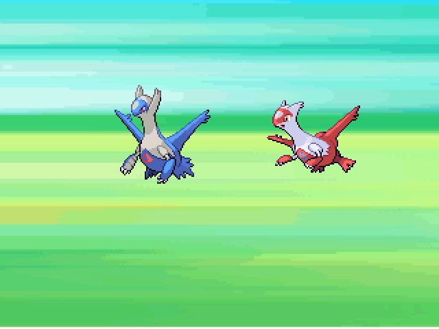
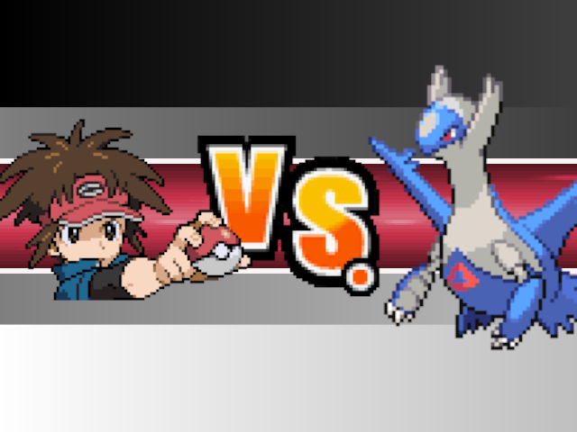
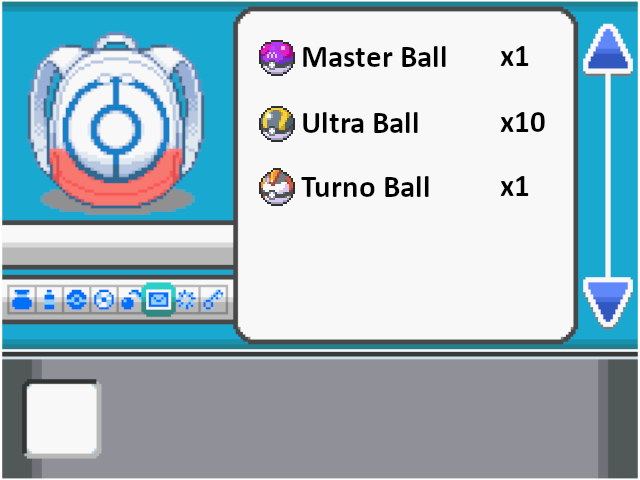

Pasaste mucho tiempo recorriendo la region de Hoen, atrapaste muchos pokemon y los entrenaste como es
debido. Y por fin podrías ir a capturar al Legendario de la region.
[[Litias o Latios]]

¿A quien iremos a capturar?
[[ Quiero capturar a Litias]]
[[ Quiero capturar a Latios]]
¡Un Litias
salvaje!!
Decides enviar a Wobbuffet para impedir su escape gracias a su habilidad "Sombra trampa"
¿Qué haras mientras tanto?
[[Lanzar ultraballs]]
[[Atacar con Manto espejo]]

!Un Latios salvaje aparece¡ ¿que vas a hacer?
[[lanzas una pokebola]]
[[Sacas un pokemon]]

Revisas tu mochila y ves que tienes 10 Ultrabal, una Turnobal y una Masterbal
¿Cual vas a usar?
[[Lanzo una Masterbal]]
[[ Lanzo una Ultrabal]]
[[Lanzo una Turnobal]]
Enviar a luchar a
Crobat
¿Que movimiento usara?
[[Toxico]]
[[Mal de ojo]]Lanzas la
ultrabal, y secomienza a agitar.
Se agita una vez... que nervios...
Se agita dos veces... sera que ya lo tienes?...
[[Comprobar]] La Turnoball se
agita una vez y...
La Turnoball se agita dos veces y...
[[Comprobar]]Atrapaste a
Latios con tu Masterbal... No ha estado mal, pero podrías esforzarte mas.
Atrapado 😀Latios quedo grabemente
envenado
Pero eso no es excusa para que salga huyendo
Latios se ha escapado 🙃Bien hecho, con Mal de
ojo, Latios ya no puede escapar
Es el mejor momento para usar Toxico
[[Usar Toxico]]Latios se a salido de la
Pokebal y ha huido...
Perdiste ☹️
Envenenaste a Latios con
Toxico, y comenzaste a lanzar tus Ultrabal, una a una hasta que han pasado muchos turnos.
Con cada turno Latios ha perdido poco a poco mas salud, pero ahora si la siguiente pokebal no lo atrapa,
Latios podría acabar debilitado.
Y a estas alturas ya no vale la pena usar la Masterbal, ¿Que pokebal usaras?
[[Lanzar Ultrabal]]
[[lanzar Turnobal]]La Ultrabal fallo,
Latios no resistió el envenenamiento y se debilita.
Todo tu esfuerzo fue en vano
Perdiste ☹️Lanzar muchas
Ultrabals, tambien significa dejar pasar muchos turnos
Por lo que la Turnobal fue muy efectiva
¡Excelente trabajo!
Capturado 😎Has lanzado muchas
ultraballs y Litias podria dejar fuera de combate a Wobbuffet en el siguiente turno ¿Que haras frente a esta
situación?
[[Lanzar otra Ultraball]]
[[Lanzar tu MasterBall]]
[[Curar Wobbuffet]]Dejaste a
Litias con el 60% de sus puntos de salud
¿Quieres atacar otra vez?
[[Atacar otra vez]]
[[Lanzar mas Ultraballs]]No solo la
ultraball fallo, sino que Latias fue dejando a Wobbuffet debilitado.
¡Perdiste! 😔Decidiste no
arriesgarte y lanzaste tu Masterball.
Puedes mejorar, pero es una jugada decente.
¡Capturada! 😎Usaste un Restaura
todo. Ahora Wobbuffet puede serguir aguantando, puedes seguir lanzando Ultraballs.
[[Lanzar mas Ultraballs]]EL golpe de Latias
asesto un golpe critico, por lo que cayó debilitada cuando Wobbuffet se lo devolvio.
¡Perdiste! 😞Te quedaste
sin Ultraballs (y ya es demaciado tarde para lanzar la Masterball). Aun tienes una Honorball que guardaste
hace tiempo; sin embargo, Wobbuffet esta a poco de caer debilitado
¿Que elegiras?
[[Lanzar tu Honorball... y rezar]]
[[Curar a Wobbuffet]]La
Honorball se ha agitado una vez...
Dos veces...
¡¿Sera posible que lo logres?!
[[Comprobarlo]]Solo te quedaban
Bayas Zidra para curar, y aquello no fue suficiente para salvar a Wobbuffet del golpe de gracia de Litias.
¡Perdiste! 😔EL que no arriesga, no
gana.
Por tu confianza lograste atrapar a Latias con una simple Honorball.
¡Eres un crack en Pokemon!
¡Capturada! 😎